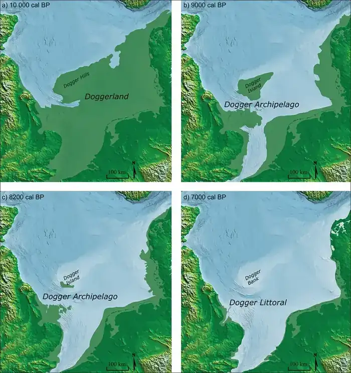

The land
Doggerland was a low-lying landmass connecting Britain to continental Europe across the southern North Sea. It was inhabited in the Mesolithic, and it was progressively drowned as sea levels rose after the last glaciation, with a final catastrophic event around 8,200 years ago — the Storegga submarine landslide and tsunami.
Maps, diagrams and images


The evidence
Trawlers have brought up mammoth bones, antlers, tools and peat for a century, and the name comes from the Dogger Bank. Modern work uses seismic survey, cores and computer reconstruction — the 'Europe's Lost Frontiers' project has mapped river channels and coastlines. Dredged material has produced artefacts including a decorated bone point.
The land is documented; what people did there is being pieced together, and the reconstruction is one of the most active areas of Mesolithic archaeology.
Documented: the landmass, its extent and its drowning.
Documented: the artefacts and bones recovered.
Documented: the Storegga event.
Being reconstructed: the landscape and its occupation.
The label: documented.
Why it is in the archive
Because it is a real lost land with real finds, and because it shows what the imaginary ones would look like if they existed: peat, bones and tools.
Open resources on this topic
- BookARSA FROM DOGGERLAND TO MYCENAE AND SINTASHTY Pavlov VM 2026 — Pavlov V. M. © 2026 All rights reserved. · 2026 (Internet Archive, free to read)
- BookNieuw Doggerland (Internet Archive, free to read)
- Bookdoggerland — David MacCartney · 2020 (Internet Archive, free to read)
- PapersOpen-access articles: DOAJ · PubMed Central · Internet Archive Scholar
- BooksPublic-domain and borrowable copies: Open Library · Project Gutenberg · Google Books
Cite this page
Momin, S. (2026). Doggerland. The Larger World Archive. https://drsamonline.github.io/LARGE_GLOBE/doggerland.htmlMomin, Sohil. “Doggerland.” The Larger World Archive, 2026, https://drsamonline.github.io/LARGE_GLOBE/doggerland.html.Momin, Sohil. “Doggerland.” The Larger World Archive, 2026. https://drsamonline.github.io/LARGE_GLOBE/doggerland.html.@misc{doggerland2026doggerland,
author = {Momin, Sohil},
title = {Doggerland},
year = {2026},
howpublished = {The Larger World Archive},
url = {https://drsamonline.github.io/LARGE_GLOBE/doggerland.html},
note = {Last reviewed 20 November 2026}
}Last reviewed 20 November 2026 · Corrections policy · this page is not peer reviewed
Sources for this page
- Wikipedia, “Doggerland” — the landmass and the evidenceen.wikipedia.org
- Wikipedia, “Storegga Slide” — the tsunamien.wikipedia.org
- Wikipedia, “Mesolithic” — the perioden.wikipedia.org
- Wikipedia, “Dogger Bank” — the featureen.wikipedia.org